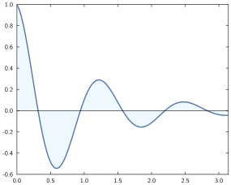
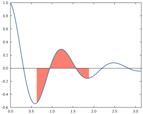

Fill between lines
Syntax
The relevant commands here are
fill_betweenandfill_between!,
and the syntax is:
command(x, y1, y2; options...)where
xmust be a vector of values or a range of values,y1andy2can either be a real value (horizontal line) or a vector of values of length matchingx.
For instance:
x = range(0, stop=π, length=100)
y1 = 0
y2 = @. cos(5x)*exp(-x)
plot(x, y2, lw=0.05)
fill_between!(x, y1, y2, fill="aliceblue")
hline(y1)
xlim(0, π)
Styling options
- from/to [
from,min,xmin//to,max,xmax]: takes a number indicating one or both vertical limits for the fill.
x = range(0, stop=π, length=100)
y1 = 0
y2 = @. cos(5x)*exp(-x)
plot(x, y2, lw=0.05)
fill_between!(x, y1, y2, fill="salmon", from=π/5, to=3π/5)
hline(y1)
xlim(0, π)
fill colour [
col,color,fill]: takes a colour to use for the filling (see examples above).alpha [
alpha]: when considering a transparent-capable output format, this takes a number between 0 and 1 indicating the level of transparency (towards 0 is more transparent, towards 1 more opaque).
x = range(0, stop=1, length=100)
y = x.^2
fill_between(x, y, x; color="orchid", alpha=0.2)
fill_between!(x, 0.5, 0.6; from=0.4, to=0.9, alpha=0.2)
style = (color="darkslategray", ls="--", lw=0.01)
hline(0.5; style...)
hline(0.6; style...)
vline(0.4; style...)
vline(0.9; style...)